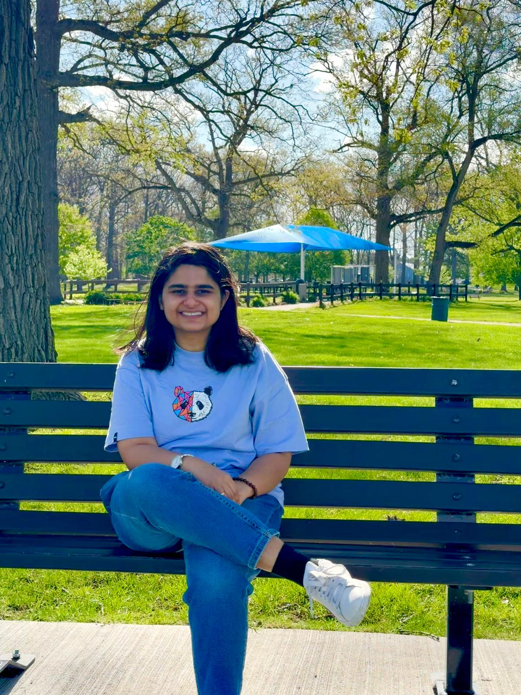

Srijita Bandopadhyay
I am a Ph.D. student in the Department of Computational Mathematics, Science, and Engineering at Michigan State University. I am a member of the SLIM Group, where I am advised by Saiprasad Ravishankar.
My research focuses on inverse problems in imaging and deep learning algorithms for image reconstruction. I am also interested in medical image analysis, machine learning for healthcare, and computer vision.
I earned my Bachelor's degree in Electronics and Communication Engineering, with a minor in Computer Science, from the University of Engineering and Management, Kolkata.
Short bio
Before joining MSU, I worked on deep learning and computer vision methods for object detection, disease classification, medical imaging, and agricultural applications under the guidance of Prof. Soumen Banerjee.

News
- 2024 Joined Michigan State University as a Ph.D. student in CMSE and became a member of the SLIM Group.
- 2024 Papers accepted at IEEE IATMSI-2024 and CIPR-2024.
- 2023 Received the Chancellor's Award for Academic Excellence.
Research
My research interests include biomedical disease diagnosis, machine learning for healthcare, medical image analysis, neuroimaging, cognitive science, and agricultural disease recognition.
Publications
- Diagnosis of Intestinal Diseases Using Endoscopy Images Based on Encoder-Attention DeepNet. Kyamelia Roy, Sheli Sinha Chaudhuri, Jaroslav Frnda, Srijita Bandopadhyay, Soumen Banerjee and Jan Nedoma. Under review, 2024.
- Leveraging Data Generation Algorithms To Improve Imbalanced Binary Classification. Srijita Bandopadhyay, Srimonti Dutta, Imran Haider, Bhavaraju Anuraag, Jerry Zhu and Saad Ahmed Bazaz. Accepted in IEEE IATMSI-2024.
- Vision Transformer Based Classification of Gastrointestinal Ulcers Using WCE Images. Srijita Bandopadhyay, Joydeep Roy Chowdhury, Rahul Shaw, Swarna Paul, and Soumen Banerjee. Accepted at CIPR-2024.
- Deep Ensemble Feature Extraction based Classification of Brain Tumor using MRI Images. Srijita Bandopadhyay, Rahul Shaw, Joydeep Roy Chowdhury, Sanskar Gupta, Kumar Ashish and Soumen Banerjee. Accepted at IEEE IATMSI-2024.
- Detection of Tomato Leaf Diseases for Agro-Based Industries Using Novel PCA DeepNet. Kyamelia Roy, Sheli Sinha Chaudhuri, Jaroslav Frnda, Srijita Bandopadhyay, IshanJyoti Ray, Soumen Banerjee and Jan Nedoma. IEEE Access, 2023. [Paper]
Experience
- Undergraduate Research Assistant, University of Engineering and Management, Kolkata, India.
- Data Engineering Intern, LTIMindtree, India.
- Assistant Research Team Manager, Beat the Virus Startup, Mumbai, India.
- Reviewer, Computers and Electronics in Agriculture, Elsevier.
Awards
- Chancellor's Award for Academic Excellence 2023.
- Certificate of Appreciation for Journal Publication.
- Certificate of Merit for securing 1st position in Electronics and Communication Engineering for 2020-2021.
- Invited talk on AI/ML based smart systems for energy, healthcare, and agriculture.